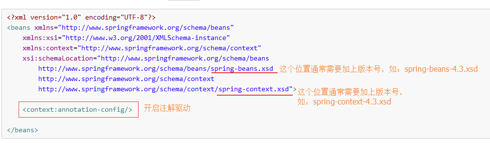

使用注解的缺点
大家都知道，使用注解会特别方便，减少配置量，但是注解的方式也是有如下的缺点：
第一点：代码的可读性不好，不容易维护，因为我们不得不在代码里找到依赖关系。
第二点：有一定的侵入性，如果哪天我们的代码不用spring了，那么我们还得一个一个去删除。
IoC相关注解（参考7.9 Annotation-based container configuration）
开启注解前的准备

@Resource注解
导包以及配置ApplicationContext.xml文件
可以加在属性上也可以加在方法上